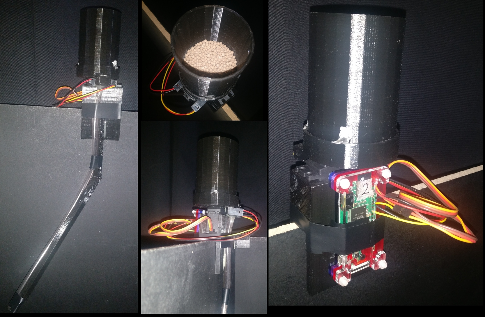
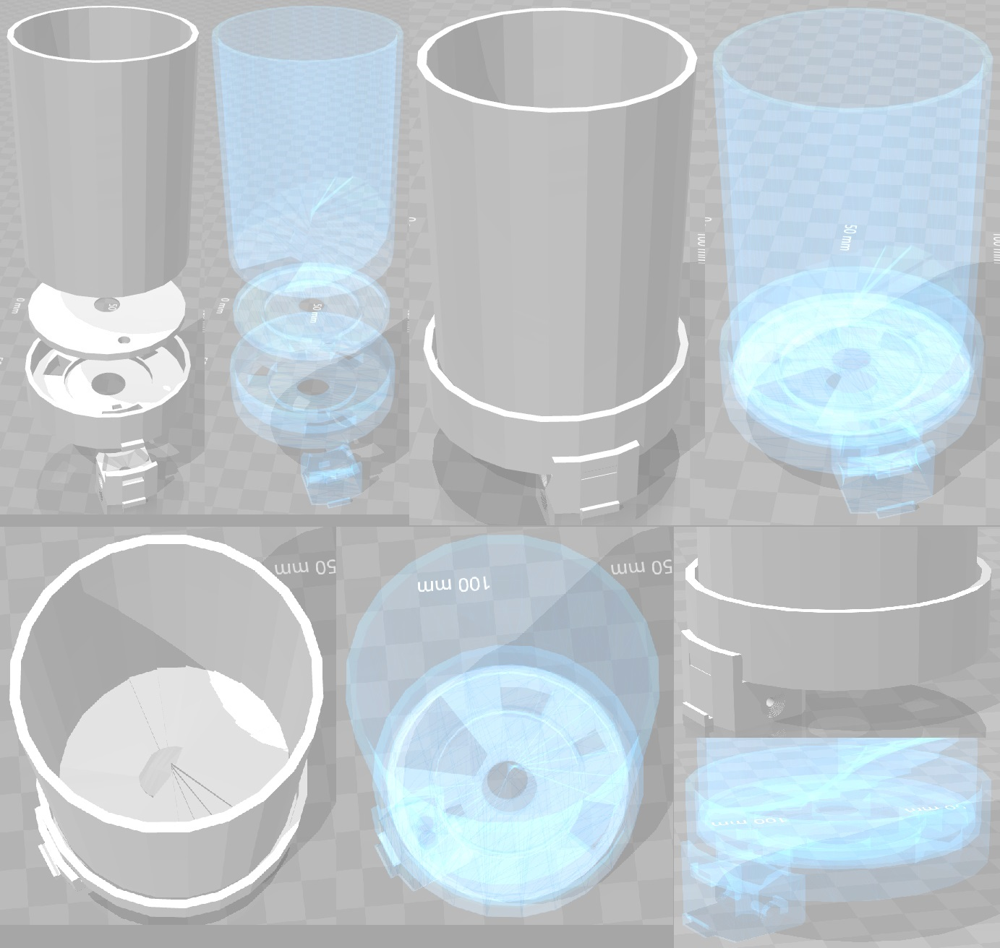

FEEDER setup¶
FEEDER - Food Ejector Executing Directions Established via Radio or Wireless Reward Module.
Setting up Raspberry Pi Zero software¶
The software and networking setup described below is identical for Milk FEEDER and Pellet FEEDER, except for sections where said otherwise.
It is advisable to follow through this part first, before assembling the FEEDER. This way it is more convenient to plug the RPi Zero to the power socket, keyboard, mouse and monitor for working through the following steps.
This tutorial is based on setting up Raspberry Pi Zero W with Recording PC that is connected to the same WiFi router as the FEEDERs.
If you are setting up multiple Pi Zeros, you can make copies after you have set up the software and networking on the first one. To make copies of a configured RPi Zero, use this guide: Making copies of Raspberry Pis. Ensure to change the static IP information on each new copy and test the SSH connection for each one, as instructed in the guide.
Installing Raspberry Pi OS: Raspbian¶
Download Raspbian Stretch Lite (Here used version 4.9) from Raspberry website. Unpack the downloaded .zip file with Archive Manager to get access to the .img file.
Download Etcher from this website. Unpack the downloaded .zip and run (double-click) the Etcher .AppImage. Select the Raspbian .img file and your inserted microSD card. Write the image (Flash button).
Insert the microSD card into Raspberry Pi Zero.
Install necessary software on RPi Zero¶
Connect your Raspberry Pi Zero W with a keyboard, monitor and power socket. Note, RPi Zero has no regular USB output, therefore you will need to use an adaptor to connect the keyboard. You will also need a mini HDMI to HDMI adaptor to connect your monitor.
The default account on a freshly installed Raspbian OS is username pi with password raspberry.
You need to connect your RPi Zero to the internet to install the necessary software. This can be done using a Wi-Fi connection, for example, a Wi-Fi hotspot created by your laptop or smartphone.
Raspbian Lite version has only command line interface and no ethernet cable port. Therefore you will need to manually edit /etc/wpa_supplicant/wpa_supplicant.conf using the command sudo nano /etc/wpa_supplicant/wpa_supplicant.conf. Enter your WiFi details such that the wpa_supplicant.conf file would look something like this:
country=GB
ctrl_interface=DIR=/var/run/wpa_supplicant GROUP=netdev
update_config=1
network={
ssid="r418"
psk="myPasswordIsSafe"
}
Here ssid is the name of the wireless network as it would appear in the list of available WiFi devices, in this case r418. The psk is the access password for the wireless network, in this case myPasswordIsSafe.
To save and exit with the nano file editor, press Ctrl + X and type Y to confirm save and press Enter to save to the same file you started to edit.
Reboot the RPi Zero Zero using command sudo reboot.
To update the RPi Zero software with the following terminal commands:
sudo apt-get update # Fetches the list of available updates
sudo apt-get upgrade # Strictly upgrades the current packages
sudo apt-get dist-upgrade # Installs updates (new ones)
To install ZeroMQ use the following terminal commands, as copied from https://github.com/MonsieurV/ZeroMQ-RPi
sudo apt-get install libtool pkg-config build-essential autoconf automake python-pip
wget https://github.com/jedisct1/libsodium/releases/download/1.0.3/libsodium-1.0.3.tar.gz
tar -zxvf libsodium-1.0.3.tar.gz
cd libsodium-1.0.3/
./configure
make
sudo make install
cd ~/
wget http://download.zeromq.org/zeromq-4.1.3.tar.gz
tar -zxvf zeromq-4.1.3.tar.gz
cd zeromq-4.1.3/
./configure
make
sudo make install
sudo ldconfig
sudo apt-get install python-dev
sudo pip install pyzmq
cd ~/
Finally, you need to put the scripts for controlling the feeders onto the RPi Zero. You could copy them over with a USB stick, download them from github or transfer them later using the scp command. In any case, you need to put the following files from the openEphys_DACQ github to the RPi home directory at /home/pi/:
- Pellet FEEDER
- ZMQcomms.py
- pelletFeederController.py
- Milk FEEDER
- ZMQcomms.py
- audioSignalGenerator.py
- milkFeederController.py
Setting up Raspberry Pi Zero interface with Picon Zero on Milk FEEDER only¶
I2C module needs to be enabled in RPi settings for use of Picon Zero in the Milk FEEDER. You can do this by accessing RPi settings via terminal command sudo raspi-config and choosing Interfacing Options with arrow keys and pressing Enter. Select I2C option and choose to Enable it. Reboot the RPi.
Install the necessary libraries for working with the Picon Zero controller with the following terminal commands:
sudo apt-get install python-smbus python3-smbus python-dev python3-dev
wget -q http://4tronix.co.uk/piconzero/piconzero.py -O piconzero.py
# Ensure piconzero.py remains in Pi root directory ``/home/pi/`` as it is used by controller scripts.
You will need to edit the file /boot/config.txt. Do this with terminal command sudo nano /boot/config.txt and add the following lines to the end of this file:
dtparam=i2c1=on
dtparam=i2c_arm=on
Save the file and reboot the RPi Zero.
If you have assembled the RPi Zero with Picon Zero, you are able to test if everything is running smoothly by entering terminal command i2cdetect -y 1. You should see an output table with empty values everywhere but one element, which should say 22.
Setting up Raspberry Pi Zero networking with Recording PC¶
To connect the Recording PC wirelessly to the FEEDERs, use a wireless router. The Recording PC networking for external network is set up using the guide Connect to the local network and the internal networking necessary for tracking Raspberry Pis is set up using the guide Configuring the Recording PC. We add a standard WiFi router (TL-WR841N) with ethernet LAN ports to the network by connecting the network switch between Recording PC and tracking RPis to one of the ethernet LAN ports on the wireless router.
Note that for the devices to see each other, the IP addresses added to the devices in the internal network must all have the same values, apart from the last digits after the last separator, e.g. 192.168.0.1 and 192.168.0.22. We chose the 192.168.0.xx address as it did not match the external network IP and made it easiest to work with a WiFi router, for which the default IP address was 192.168.0.1.
Setting up the wireless router¶
The TL-WR841N wireless router configuration page can be accessed using a browser from a connected device (LAN or WiFi) and typing in the address bar 192.168.0.1. The username and password are both admin.
We changed the Wireless Network Name or SSID in Wireless -> Wireless Settings to r418. For the Wireless Security we chose WPA/WPA2 - Personal version WPA2-PSK encryption AES and set the Wireless password to our liking.
We also changed the DHCP -> DHCP Settings, although this may not be relevant. Start IP Address to 192.168.0.1 and End IP Address to 192.168.0.99.
Make sure to save any changes and reboot the router.
Setting up Networking with RPi Zero and Recording PC¶
Now connect the RPi Zero to the wireless router by changing the file /etc/wpa_supplicant/wpa_supplicant.conf as instructed above, for connecting RPi Zero to WiFi with internet.
Setting a static IP address on the RPi Zero¶
The following instructions are based on this video guide.
To set static IP address, you need to make changes to /etc/dhcpcd.conf. For that you need to clarify the identity of the correct wireless device on your RPi Zero. Enter into terminal ifconfig and you should see network identities. It is most likely wlan0 that has inforamtion such as Link encap:Ethernet. You also need the IP address of the Wi-Fi router. This is the IP address you typed into your browser to find access the router’s graphical interface. Alternatively, you can find the router’s IP by entering the terminal command ip route show. This should output information on your current connection and should show the Wi-Fi hotspot IP address as something like: default via 192.168.0.1.
Now open dhcpcd.conf with terminal command sudo nano /etc/dhcpcd.conf. Add to the very end of the file the following lines:
interface wlan0
static ip_address=192.168.0.40/24
static routers=192.168.0.1
static domain_name_servers=192.168.0.1
Here you want to use the correct device identity that you found on the RPi Zero with ifconfig command, e.g. wlan0. Set the router and domain_name_server values to the IP of the router that you found. Finally, the ip_address should be the same as the router, only the final value should be different, as in this example it is 40. If you have multipe RPi Zeros, set this to different value on each, e.g. 40, 41, 42 etc. The /24 indicates the port number. Keep this the same in all cases.
We used the final IP address values 40 and up for Milk FEEDERs 1, 2, 3 etc and IP address values 60 and up for Pellet FEEDERs 1, 2, 3 etc.
As you save the changes to dhcpcd.conf and reboot your RPi Zero, it should connect to the Wi-Fi hotspot automatically and have the IP address you assigned. You can check this now with the ifconfig terminal command on the RPi Zero and check if you see the IP address you assigned. Also try pinging the router by using it’s IP in the command ping 192.168.0.1.
Configuring SSH on RPi Zero¶
SSH needs to be enabled on RPi Zero. You can do this by accessing RPi settings via terminal command sudo raspi-config and choosing Interfacing Options with arrow keys and pressing Enter. Select SSH option and choose to Enable it. Restart RPi Zero.
Try connecting to the RPi Zero with SSH using terminal command from Recording PC ssh pi@192.168.0.40. At first time of running, it may say The authenticity of host ‘192.168.0.40 (192.168.0.40)’ can’t be established. -//- Are you sure you want to continue connecting (yes/no)?* Type yes and hit Enter.
The SSH login may be slow. This can be fixed by editing the sshd_config file. Open it with terminal command sudo nano /etc/ssh/sshd_config and add this line to the very end:
UseDNS no
Restart the RPi Zero
The following instructions allow connecting with the RPi via SSH without entering password each time. This is necessary for scripts on Recording PC. The instructions are based on this guide. If you have previously generated the SSH key on the Recording PC, you should skip the first step of generating a new key.
Generate a new SSH key on Recording PC with terminal command ssh-keygen -t rsa -C recpc@pi. Use the default location to save the key by pressing Enter. Leave the passphrase empty by pressing Enter. You have now generated a new SSH key.
To copy the SSH key to the RPi open terminal on Recording PC and connect to your RPi using SSH with command ssh pi@192.168.0.40 and enter raspberry as password. Enter this command in the terminal where you opened the SSH connection install -d -m 700 ~/.ssh.
Now exit the SSH session or open a new terminal on Recording PC and enter this command cat ~/.ssh/id_rsa.pub | ssh pi@192.168.0.40 'cat >> .ssh/authorized_keys'. Use the correct IP address (the numbers: 192.168.0.40) in that command for the IP address of the RPi you are connecting to. Enter the password raspberry for your RPi.
Now your RPi should be able to connect to the RPi via SSH without a password. Test if it requests for password when you try to conenct to it using SSH.
Now the RPi Zero software and networking is fully configured and after assembling the FEEDER, it will be ready to use with the Recording PC.
Production and assembly of Pellet FEEDER¶
This guide describes the commercial and 3D printed parts needed as well as the assembly of the Pellet FEEDER. See below for illustrative images.
The working principle of the Pellet FEEDER is that it only ever picks up at most a single pellet to drop, as no more fit into the transfer mechanism. Occasionally no pellet is caught, in which case the IR detector does not detect a pellet and the FEEDER tries again.
The functioning of the Pellet FEEDER with this exact design is dependent on using dry pellets of specific size, that produce minimal dust. We have been using Dustless Precision Pellets®, Rodent, Purified, 20mg from Bio-Serv. The design of the holes in feeder elements (RotatingElement and Detector) is based on fitting exactly one pellet at a time. If pellet size is changed, these elements need to be redesigned.
Commerically available materials needed¶
- Raspberry Pi Zero W
- microSD card to use with the Pi Zero
- TowerPro 44g SG-5010 Analogue Servo
- Digital Servo of the same type and slightly different versions may work as well, however it this specific servo comes with output discs that fit the 3D print designs perfectly.
Standard wires and soldering kit
Thick adhesive, such as dental cement or epoxy.
Superglue
Power drill
Dustless Precision Pellets®, Rodent, Purified, 20mg from Bio-Serv
3D printed elements to produce¶
The following files are provided in 3D_Printing_Models subfolder Pellet_FEEDER in both SKP (SketchUp 3D) and STL (generic) formats. Here is a list of items necessary to be printed and their recommended priting settings on Ultimaker 2.
- Elements essential for assemply of the FEEDER
- TopElement - Layer Height 0.1 mm, Infill Density 30%
- RotatingElement - Layer Height 0.1 mm, Infill Density 100%
- BottomElement - Layer Height 0.1 mm, Infill Density 30%
- Detector - Layer Height 0.1 mm, Infill Density 50%
- Additional optional elements for combining FEEDER with specific experimental environment
- Holders - Layer Height 0.1 mm, Infill Density 30%
- Guides - Layer Height 0.1 mm, Infill Density 30%
The essential elements and how they are to be assembled relative to each other is illustrated in the image below.
Assembly of Pellet FEEDER¶
First step would be to wire together all the electronics. This could be made easier with a Raspberry Pi GPIO header, such as this and some jumper wires. But teh wires can just be soldered directly to the Pi’s GPIO contacts.
The below table describes the wiring using Physical Numbering of RPi GPIO contacts.
| Element | Wire type | Raspberry Pi Physical Pin |
|---|---|---|
| TowerPro SG-5010 wires | ground | 6 |
| power | 2 | |
| signal | 12 | |
IR Break Beam Sensor Emitter |
ground | 9 |
| power | 4 | |
IR Break Beam Sensor Detector |
ground | 9 |
| power | 4 | |
| signal | 15 |
This wiring could be changed, but if the GPIO pins of signal wires are changed, corresponding changes would need to be made in pelletFeederController.py.
At this stage it is recommended to test if everything is working as expected using the detect_pellet and servo_controller classes in pelletFeederController.py.
To assemble the 3D printed elements, first glue (with superglue or thin layer of epoxy) to the bottom of the RotatingElement the output disc of the servo motor that fits there perfectly. If there is any wiggle room, make sure the disc is in the center of the RotatingElement.
Then glue (with superglue or thin layer of epoxy) the BottomElement to the top of the servo motor. Make sure to get the location of the pellet drop opening correct based on the illustrations above. The pellet drop opening (largest gap on the perimeter of BottomElement, to which Detector can be attached) should be as far away from the servo motor as possible. To assist with the glueing the RotatingElement can be attached firmly to the servo motor with the rotating disc.
It is important that there is almost no space between the RotatingElement and BottomElement, as seen through the hole in the RotatingElement.
Once the BottomElement glue has hardened, attach the RotatingElement to the servo motor such that the when the servo_controller class in pelletFeederController.py sets the angle to ReleaseAngle (default is 90), then the hole in the RotatingElement would be aligned with the pellet drop opening on the BottomElement. Then place the TopElement on top of the RotatingElement inside the BottomElement such that when servo_controller class in pelletFeederController.py sets the angle to LoadingAngle (default is 30), the hole in the RotatingElement is aligned with the gap in the bottom of the TopElement. If this is done correctly, the relative positions of all elements should match those on the illustrations.
Once everything is aligned, remember the position of the TopElement. Use servo_controller class in pelletFeederController.py to set the angle of RotatingElement such that its hole is between the gaps of TopElement and BottomElement (usually the value of the angle is around 45). Place a single pellet in the hole of RotatingElement, oriented such that its would be as high in the hole as possible (the pellets are not perfectly spherical). Then put a small piece of paper over the hole with the pellet, such that when you put the TopElement back to its correct position, the piece of paper is accessible and can be removed via the gap in the bottom of the TopElement. This ensures that there is some minimal gap between the pellet and the TopElement, in a situation when pellet is taking most space between the BottomElement and TopElement. Now glue the TopElement to the BottomElement using a viscuous adhesive between the top edge of the BottomElement, taking care not to let any glue get to the inside of the BottomElement, where it may glue stuck the RotatingElement.
Now it is recommended to test the functioning of the Pellet FEEDER using the release_pellet function in pelletFeederController.py, which does not use the IR beams to check for false positives. The Pellet FEEDER without the IR beams should release pellets with around 90% success rate. In some cases, the TopElement may need to be re-attached to provide a tighter or looser fit on the RotatingElement.
The last thing to assemble is the Detector and the IR Break Beam Sensor. On the sides of the 3D printed Detector, where the IR beam emitter and sensor are supposed to go (see images above), there are indentations with a small hole in the middle. First use a small drill bit, about 1 mm diameter, to drill through the small holes all the way through the Detector element. There should be a clear straight hole from one side to the other, going orthogonally through center of the pellet drop hole in the middle of the Detector. The IR Break Beam Sensor is going to pass a light through this small hole just made, which is interrupted by a pellet going through. Now use a larger drill bit to make the indentation on the side of the Detector deeper, such that it would perfectly fit the emitter and sensor parts of the IR Break Beam Sensor (see images above for how they should fit). The smaller hole carrying the IR beam through the Detector may need clearing up afterwards. Then place the IR Break Beam Sensor’s emitter and sensor to either side of the Detector (does not matter which one is which side) and glue them in place with a strong adhesive.
The Detector can be pushed onto the BottomElement and it should simply snap in place.
The Pellet FEEDER is now fully assembled. Make sure to test it.
Any custom holder and pellet guide can be used as long as it can support the FEEDER from the servo motor, allow attaching the Raspberry Pi Zero and provides clear passage from any pellets dropping out from the bottom of the Detector. The designs for Holders and Guides used in our lab are provided. We have glued a rubber tube to the bottom of the Detector that guides the pellets as necessary.
Use and Maintenance of Pellet FEEDER¶
Use of Pellet FEEDER¶
The Pellet FEEDER is controller with pelletFeederController.py. Simplest command is to SSH into the Raspberry Pi of the FEEDER and give command python pelletFeederController.py --releasePellet 1, which instructs it to release exactly one pellet as detected by the IR Break Beam Sensor.
For faster contol the script should be started without the --releasePellet flag, in which case the Controller is activated. This expect signals over ZMQ protocol. See Controller class for more information.
Maintenance of Pellet FEEDER¶
The Pellet FEEDER with the correct pellets is very reliable and should release around 500-1000 pellets without jamming. The max_attempts variable in pelletFeederController.py is used to stop the pellet in case of too many failed attempts, which is an indicator of jamming.
The jamming is usually caused by the inside of the Detector getting too dusty and/or moist. This can stop a dropping pellet, which then causes more to get stuck. In case of a jam, just detach the Detector from the BottomElement and clear out pellets. Use an air duster to clean off any collected dust. If this is done regularly, no jams may occur.
At the time of writing the most used Pellet FEEDERs have dropped around 5000 pellets and still function as good as new.
Production and assembly of Milk FEEDER¶
The materials you need for the FEEDER:
Raspberry Pi Zero Picon Zero Current Converter and Battery Guard - HUBOSD eco X Type w/STOSD8 & XT60 LiPo battery with high current output Solenoid Pinch Valve
Ensure you use the correct motor to match the command in openPinchValve.py, set motor 1.